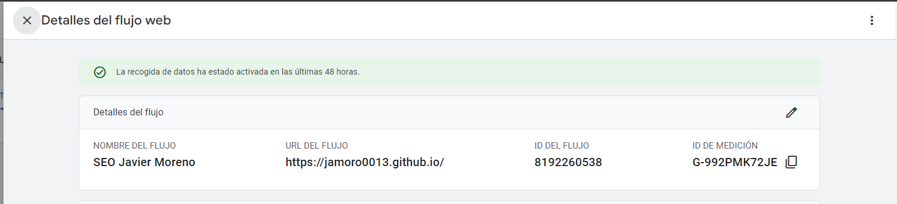

Introdución:
En este proyecto de herramientas SEO aprenderemos a configurar: Google Analytics, Google Search Console y Google ADS, a ver el estudio de los datos que nos proporcionan sobre el tráfico y rendimiento de nuestra web, facilitando así la visibilidad de la web en los motores de búsqueda.
Las principales características son:
- Análisis del tráfico del sitio web:Te muestra quiénes visitan tu sitio, cuántas páginas ven y cuánto tiempo pasan en él. Puedes ver de dónde vienen tus visitantes, qué dispositivos utilizan y cómo llegaron a tu sitio.
- Datos demográficos y de intereses:Te brinda información sobre la edad, género e intereses de tus visitantes. Puedes usar estos datos para dirigir tu estrategia de marketing de manera más efectiva.
- Rastreo de acciones del usuarioTe permite ver el proceso que siguen tus visitantes desde que llegan a tu sitio hasta que realizan una acción deseada, como una compra. Identifica dónde abandonan los visitantes, por si tienes que mejorar algo.
- Integración con otras plataformas de Google:Se conecta fácilmente con otras herramientas de Google, como Google Ads y Google Data Studio. Esto te permite obtener un análisis más completo y personalizado de tu sitio y tus campañas de marketing.
Intrucciones de configuración de Google Analytics:
Accedemos a Google Analytics. Una vez dentro inicaremos sesión, y daremos de alta una propieda / "empresa" y configuraremos varios aspectos segun interes y fin del proyecto
Creacion de propiedad:
Configuraremos y describiremos los parametros de la empresa que Google Analytics nos pide segun nuestras necesidades.
Objetivos del negocio:

Empezar a recoger datos:
Una vez creada la propiedad debemos crear un nuevo flujo de datos, lo cual el propio Google Analytics nos proporciona el codigo y la ID unica para insertar en nuestro código HTML
Una vez insertado el código proporcionado tardaremos aproximadamente unas 48 horas en recibir datos.
Una vez pasadas las 48 horas ya podremos ver las estadisticas de nuestro enlace, aqui dejo algunos ejemplos: